Modeling relational event networks with remstimate
A tutorial
Source:vignettes/remstimate.Rmd
remstimate.RmdThe aim of the function remstimate() is to find the set
of model parameters that optimizes either: (1) the likelihood function
given the observed data or (2) the posterior probability of the
parameters given the prior information on their distribution and the
likelihood of the data. Furthermore, the likelihood function may differ
depending on the modeling framework used, be it tie-oriented or
actor-oriented:
the tie-oriented framework, which models the occurrence of dyadic events as realization of ties along with their waiting time (Butts 2008);
-
the actor-oriented framework, which models the occurrence of the dyadic events as a two-steps process (Stadtfeld and Block 2017):
- in the first step, it models the propensity of any actor to initiate any form of interaction as a sender and the waiting time to the next interaction (sender rate model);
- in the second step, it models the probability of the sender at 1. choosing the receiver of its future interaction (receiver choice model).
The mandatory input arguments of remstimate() are:
reh, which is aremifyobject of the processed relational event history (processing functionremifyavailable with the packageremify,install.packages("remify"));stats, aremstatsobject (theremstatsfunction for calculating network statistics is available with the packageremstats,install.packages("remstats")). A linear predictor for the model is specified via a formula object (for the actor-oriented framework, up to two linear predictors can be specified) and supplied to the functionremstats::remstats()along with theremifyobject. Whenattr(reh,"model")is"tie",statsconsists of only one array of statistics; ifattr(reh,"model")is"actor",statsconsists of a list that can contain up to two arrays named"sender_stats"and"receiver_stats". The first array contains the statistics for the sender model (event rate model), the second array for the receiver model (multinomial choice model). Furthermore, it is possible to calculate the statistics for only the sender model or only the receiver model, by supplying the formula object only for one of the two models. For more details on the use ofremstats::remstats(), seehelp(topic=remstats,package=remstats).
Along with the two mandatory arguments, the argument
method refers to the optimization routine to use for the
estimation of the model parameters and its default value is
"MLE". Methods available in remstimate are:
Maximum Likelihood Estimation ("MLE"),
Adaptive Gradient Descent ("GDADAMAX"),
Bayesian Sampling Importance Resampling
("BSIR"), Hamiltonian Monte Carlo
("HMC").
Estimation approaches: Frequentist and Bayesian
In order to optimize model parameters, the available approaches
resort to either the Frequentist theory or the Bayesian theory. The
remstimate package provides several optimization methods to
estimate the model parameters:
- two Frequentist approaches such as Maximum Likelihood Estimation
(
"MLE") and Adaptive Gradient Descent ("GDADAMAX") which are respectively second-order and first-order optimization algorithms; - two Bayesian approaches such as Bayesian Sampling Importance
Resampling (
"BSIR") and Hamiltonian Monte Carlo ("HMC").
To provide a concise overview of the two approaches, consider a time-ordered sequence of \(M\) relational events, \(E_{t_M}=(e_1,\ldots,e_M)\), the array of statistics (explanatory variables) \(X\), and \(\boldsymbol{\beta}\) the vector of model parameters describing the effect of the explanatory variables, which we want to estimate. The explanation that follows below is valid for both tie-oriented and actor-oriented modeling frameworks.
The aim of the Frequentist approaches is to find the set of parameters \(\boldsymbol{\hat{\beta}}\) that maximizes the value of the likelihood function \(\mathscr{L}(\boldsymbol{\beta}; E_{t_M},X)\), that is
\[ \boldsymbol{\hat{\beta}}=\mathop{\mathrm{arg\,max}}_{\boldsymbol{\beta}}\{\mathscr{L}(\boldsymbol{\beta};E_{t_M},X)\} \]
Whereas, the aim of the Bayesian approaches is to find the set of parameters \(\boldsymbol{\hat{\beta}}\) that maximizes the posterior probability of the model which is proportional to the likelihood of the observed data and the prior distribution assumed over the model parameters,
\[p(\boldsymbol{\beta}|E_{t_M},X) \propto \mathscr{L}(\boldsymbol{\beta}; E_{t_M},X) p(\boldsymbol{\beta})\]
where \(p(\boldsymbol{\beta})\) is the prior distribution of the model parameters which, for instance, can be assumed as a multivariate normal distribution,
\[ \boldsymbol{\beta} \sim \mathcal{N}(\boldsymbol{\mu_{0}},\Sigma_{0}) \]
with parameters \((\boldsymbol{\mu_{0}},\Sigma_{0})\) summarizing the prior information that the researcher may have on the distributon of \(\boldsymbol{\beta}\).
Let’s get started (loading the remstimate package)
Before starting, we want to first load the remstimate
package. This will laod in turn remify and
remstats, which we need respectively for processing the
relational event history and for calculating/processing the statistics
specified in the model:
In this tutorial, we are going to use the main functions from
remify and remstats by setting their arguments
to the default values. However, we suggest the user to read through the
documentation of the two packages and their vignettes in order to get
familiar with their additional functionalities (e.g., possibility of
defining time-varying risk set, calculating statistics for a specific
time window, and many others).
Modeling frameworks
Tie-Oriented Modeling framework
For the tie-oriented modeling, we refer to the seminal paper by Butts (2008), in which the author introduces the likelihood function of a relational event model (REM). Relational events are modeled in a tie-oriented approach along with their waiting time (if measured). When the time variable is not available, then the model reduces to the Cox proportional-hazard survival model (Cox 1972).
The likelihood function
Consider a time-ordered sequence of \(M\) relational events, \(E_{t_M}=(e_1,\ldots,e_M)\), where each event \(e_{m}\) in the sequence is described by the 4-tuple \((s_{m},r_{m},c_{m},t_{m})\), respectively sender, receiver, type and time of the event. Furthermore,
- \(N\) is the number of actors in the network. For simplicity, we assume here that all actors in the network can be the sender or the receiver of a relational event;
- \(C\) is the number of event types, which may describe the sentiment of an interaction (e.g., a praise to a colleague, or a conflict between countries). We set \(C=1\) for simplicity, which also means that we work with events without sentiment (at least not available in the data);
- \(P\) is the number of sufficient statistics (explanatory variables);
The likelihood function that models a relational event sequence with a tie-oriented approach is, \[ \mathscr{L}(\boldsymbol{\beta}; E_{t_M},X)= \prod_{m=1}^{M}{\Bigg[\lambda(e_{m},t_{m},\boldsymbol{\beta})\prod_{e\in \mathcal{R}}^{}{\exp{\left\lbrace-\lambda(e,t_{m},\boldsymbol{\beta})\left(t_m-t_{m-1}\right)\right\rbrace} }}\Bigg] \]
where:
-
\(\lambda(e,t_{m},\boldsymbol{\beta})\) is
the rate of occurrence of the event \(e\) at time \(t_{m}\). The event rate describes the
istantaneous probability of occurrence of an event at a specific time
point and it is modeled as \(\lambda(e,t_{m},\boldsymbol{\beta}) =
\exp{\left\lbrace
\boldsymbol{\beta}^{T}X_{[m,e,.]}\right\rbrace}\) where:
- \(\boldsymbol{\beta}\) is the vector of parameters of interest. Such parameters describe the effect that the sufficient statistics (explanatory variables) have on the event rate;
-
\(\boldsymbol{\beta}^{T}X_{[m,e,.]} =
\sum_{p=1}^{P}{\beta_p X_{[m,e,p]}}\) is the linear predictor of
the event \(e\) at time \(t_{m}\). The object \(X\) is a three dimensional array with
number of rows equal to the number of unique time points (or events) in
the sequence (see
vignette(package="remstats")for more information about statistics calculated per unique time point or per observed event), number of columns equal to number of dyadic events (\(D\)), (seevignette(topic="remify",package="remify")for more information on how to quantify the number of dyadic events), number of slices equal to the number of variables in the linear predictor (\(P\)).
- \(e_m\) refers to the event occurred at time \(t_m\) and \(e\) refers to any event at risk at time \(t_m\);
-
\(\mathcal{R}\) describes the set
of events at risk at each time point (including also the occurring
event). In this case, the risk set is assumed to be the full
risk set (see
vignette(topic="riskset",package="remify")for more information on alternative definitions of the risk set), which means that all the possible dyadic events are at risk at any time point; - \((t_{m}-t_{m-1})\) is the waiting time between two subsequent events.
If the time of occurrence of the events is not available and we know only their order of occurrence, then the likelihood function reduces to the Cox proportional-hazard survival model (Cox 1972),
\[ \mathscr{L}(\boldsymbol{\beta}; E_{t_M},X)= \prod_{m=1}^{M}{\Bigg[\frac{\lambda(e_{m},t_{m},\boldsymbol{\beta})}{\sum_{e\in \mathcal{R}}^{}{\lambda(e,t_{m},\boldsymbol{\beta})}}}\Bigg] \]
A toy example on the tie oriented modeling framework
In order to get started with the optimization methods available in
remstimate, we consider the data tie_data,
that is a list containing a simulated relational event sequence where
events were generated by following a tie-oriented process. We are going
to model the event rate \(\lambda\) of
any event event \(e\) at risk at time
\(t_{m}\) as:
\[\begin{align}\lambda(e,t_{m},\boldsymbol{\beta}) = \exp{\left\lbrace\beta_{intercept} + \beta_{\text{indegreeSender}}\text{indegreeSender}(s_e,t_{m}) + \\ +\beta_{\text{inertia}}\text{inertia}(s_e,r_e,t_{m}) + \beta_{\text{reciprocity}}\text{reciprocity}(s_e,r_e,t_{m})\right\rbrace}\end{align}\]
Furthermore, we know that the true parameters quantifying
the effect of the statistics (name in subscript next to \(\beta\)) and used in the generation of the
event sequence are: \[\begin{bmatrix}
\beta_{intercept} \\ \beta_{\text{indegreeSender}} \\
\beta_{\text{inertia}} \\ \beta_{\text{reciprocity}} \end{bmatrix} =
\begin{bmatrix} -5.0 \\ 0.01 \\ -0.1 \\ 0.03\end{bmatrix}\] The
parameters are also available as object within the list,
tie_data$true.pars.
# setting `ncores` to 1 (the user can change this parameter)
ncores <- 1L
# loading data
data(tie_data)
# true parameters' values
tie_data$true.pars## intercept indegreeSender inertia reciprocity
## -5.00 0.01 -0.10 0.03
# processing the event sequence with 'remify'
tie_reh <- remify::remify(edgelist = tie_data$edgelist, model = "tie")
# summary of the (processed) relational event network
summary(tie_reh)## Relational Event Network
## (processed for tie-oriented modeling):
## > events = 100
## > actors = 5
## > riskset = full
## > directed = TRUE
## > ordinal = FALSE
## > weighted = FALSE
## > time length ~ 807
## > interevent time
## >> minimum ~ 0.1832
## >> maximum ~ 63.6192Estimating a model with remstimate() in 3 steps
The estimation of a model can be summarized in three steps:
- First, we define the linear predictor with the variables of
interest, using the statistics available within
remstats(statistics calculated by the user can be also supplied toremstats::remstats()).
# specifying linear predictor (with `remstats`) using a 'formula'
tie_model <- ~ 1 + remstats::indegreeSender() +
remstats::inertia() + remstats::reciprocity() - Second, we calculate the statistics defined in the linear predictor
with the function
remstats::remstats()from theremstatspackage.
# calculating statistics (with `remstats`)
tie_stats <- remstats::remstats(reh = tie_reh, tie_effects = tie_model)
# the 'tomstats' 'remstats' object
tie_stats## Relational Event Network Statistics
## > Model: tie-oriented
## > Computation method: per time point
## > Dimensions: 100 time points x 20 dyads x 4 statistics
## > Statistics:
## >> 1: baseline
## >> 2: indegreeSender
## >> 3: inertia
## >> 4: reciprocity- Finally, we are ready to run any of the optimization methods with
the function
remstimate::remstimate().
# for example the method "MLE"
remstimate::remstimate(reh = tie_reh,
stats = tie_stats,
method = "MLE",
ncores = ncores) ## Relational Event Model (tie oriented)
##
## Coefficients:
##
## baseline indegreeSender inertia reciprocity
## -4.91045403 0.04349023 -0.20150573 -0.05213701
##
## Null deviance: 1216.739
## Residual deviance: 1210.625
## AIC: 1218.625 AICC: 1219.046 BIC: 1229.045In the sections below, we show the estimation of the parameters using
all the methods available and we also show the usage and output of the
methods available for a remstimate object.
Frequentist approaches
Maximum Likelihood Estimation (MLE)
tie_mle <- remstimate::remstimate(reh = tie_reh,
stats = tie_stats,
ncores = ncores,
method = "MLE",
WAIC = TRUE, # setting WAIC computation to TRUE
nsimWAIC = 100) # number of draws for the computation of the WAIC set to 100 print( )
# printing the 'remstimate' object
tie_mle## Relational Event Model (tie oriented)
##
## Coefficients:
##
## baseline indegreeSender inertia reciprocity
## -4.91045403 0.04349023 -0.20150573 -0.05213701
##
## Null deviance: 1216.739
## Residual deviance: 1210.625
## AIC: 1218.625 AICC: 1219.046 BIC: 1229.045 WAIC: 1219.669summary( )
# summary of the 'remstimate' object
summary(tie_mle)## Relational Event Model (tie oriented)
##
## Call:
## ~1 + remstats::indegreeSender() + remstats::inertia() + remstats::reciprocity()
##
##
## Coefficients (MLE with interval likelihood):
##
## Estimate Std. Err z value Pr(>|z|) Pr(=0)
## baseline -4.910454 0.187555 -26.181372 0.0000 <2e-16
## indegreeSender 0.043490 0.036449 1.193170 0.2328 0.8307
## inertia -0.201506 0.088154 -2.285831 0.0223 0.4231
## reciprocity -0.052137 0.098237 -0.530728 0.5956 0.8968
## Null deviance: 1216.739 on 100 degrees of freedom
## Residual deviance: 1210.625 on 96 degrees of freedom
## Chi-square: 6.11449 on 4 degrees of freedom, asymptotic p-value 0.1907597
## AIC: 1218.625 AICC: 1219.046 BIC: 1229.045 WAIC: 1219.669Under the column named \(Pr(>|z|)\), the usual test on the
z value for each parameter. As to the column named \(Pr(=0|x)\), an approximation of the
posterior probability of each parameter being equal to 0.
Information Critieria
# aic
aic(tie_mle)## [1] 1218.625
# aicc
aicc(tie_mle)## [1] 1219.046
# bic
bic(tie_mle)## [1] 1229.045
#waic
waic(tie_mle)## [1] 1219.669diagnostics( )
# diagnostics
tie_mle_diagnostics <- diagnostics(object = tie_mle, reh = tie_reh, stats = tie_stats)Adaptive Gradient Descent Optimization (GDADAMAX)
tie_gd <- remstimate::remstimate(reh = tie_reh,
stats = tie_stats,
ncores = ncores,
method = "GDADAMAX",
epochs = 200L, # number of iterations for the Gradient-Descent algorithm
WAIC = TRUE, # setting WAIC computation to TRUE
nsimWAIC = 100) # number of draws for the computation of the WAIC set to 100
# print
tie_gd## Relational Event Model (tie oriented)
##
## Coefficients:
##
## baseline indegreeSender inertia reciprocity
## -5.022630364 -0.008719889 0.027182180 -0.028030095
##
## Null deviance: 1216.739
## Residual deviance: 1217.914
## AIC: 1225.914 AICC: 1226.335 BIC: 1236.334 WAIC: 1225.534
# diagnostics
tie_gd_diagnostics <- diagnostics(object = tie_gd, reh = tie_reh, stats = tie_stats)
# plot
# plot(x = tie_gd, reh = tie_reh, diagnostics = tie_gd_diagnostics) # uncomment to use the plot functionBayesian approaches
Bayesian Sampling Importance Resampling (BSIR)
library(mvnfast) # loading package for fast simulation from a multivariate Student t distribution
priormvt <- mvnfast::dmvt # defining which distribution we want to use from the 'mvnfast' package
tie_bsir <- remstimate::remstimate(reh = tie_reh,
stats = tie_stats,
ncores = ncores,
method = "BSIR",
nsim = 200L, # 200 draws from the posterior distribution
prior = priormvt, # defining prior here, prior parameters follow below
mu = rep(0,dim(tie_stats)[3]), # prior mu value
sigma = diag(dim(tie_stats)[3])*1.5, # prior sigma value
df = 1, # prior df value
log = TRUE, # requiring log density values from the prior,
seed = 23029, # set a seed only for reproducibility purposes
WAIC = TRUE, # setting WAIC computation to TRUE
nsimWAIC = 100 # number of draws for the computation of the WAIC set to 100
)
# summary
summary(tie_bsir)## Relational Event Model (tie oriented)
##
## Call:
## ~1 + remstats::indegreeSender() + remstats::inertia() + remstats::reciprocity()
##
##
## Posterior Modes (BSIR with interval likelihood):
##
## Post.Mode Post.SD Q2.5% Q50% Q97.5% Pr(=0|x)
## baseline -4.940502 0.186072 -5.277344 -4.886659 -4.5644 <2e-16
## indegreeSender 0.038982 0.035994 -0.031385 0.042822 0.1095 0.8476
## inertia -0.203187 0.094298 -0.382460 -0.203889 -0.0326 0.4953
## reciprocity -0.017419 0.093554 -0.234598 -0.061255 0.1357 0.9076
## Log posterior: -615.9267 WAIC: 1219.248
# diagnostics
tie_bsir_diagnostics <- diagnostics(object = tie_bsir, reh = tie_reh, stats = tie_stats)
# plot
# plot(x = tie_bsir, reh = tie_reh, diagnostics = tie_bsir_diagnostics) # uncomment to use the plot functionHamiltonian Monte Carlo (HMC)
tie_hmc <- remstimate::remstimate(reh = tie_reh,
stats = tie_stats,
method = "HMC",
ncores = ncores,
nsim = 200L, # 200 draws to generate per each chain
nchains = 4L, # 4 chains to generate
burnin = 200L, # burnin length is 200
thin = 2L, # thinning size set to 2 (the final length of the chains will be 100)
seed = 23029, # set a seed only for reproducibility purposes
WAIC = TRUE, # setting WAIC computation to TRUE
nsimWAIC = 100 # number of draws for the computation of the WAIC set to 100
)
# summary
summary(tie_hmc)## Relational Event Model (tie oriented)
##
## Call:
## ~1 + remstats::indegreeSender() + remstats::inertia() + remstats::reciprocity()
##
##
## Posterior Modes (HMC with interval likelihood):
##
## Post.Mode Post.SD Q2.5% Q50% Q97.5%
## baseline -4.89176602 0.10098116 -5.13667338 -4.91842653 -4.7228
## indegreeSender 0.04216992 0.02128111 -0.00011355 0.04485789 0.0848
## inertia -0.20584522 0.05187206 -0.29432727 -0.19865069 -0.0960
## reciprocity -0.05412344 0.05675886 -0.15335845 -0.05335163 0.0670
## Pr(=0|x)
## baseline < 2.2e-16
## indegreeSender 0.584017
## inertia 0.003791
## reciprocity 0.863885
## Log posterior: -605.3317 WAIC: 1213.59Q2.5%, Q50% and Q97.5% are
respectively the percentile 2.5, the median (50th percentile) and the
percentile 97.5.
# diagnostics
tie_hmc_diagnostics <- diagnostics(object = tie_hmc, reh = tie_reh, stats = tie_stats)
# plot (histograms and trace plot have highest posterior density intervals dashed lines in blue and posterior estimate in red)
plot(x = tie_hmc, reh = tie_reh, diagnostics = tie_hmc_diagnostics)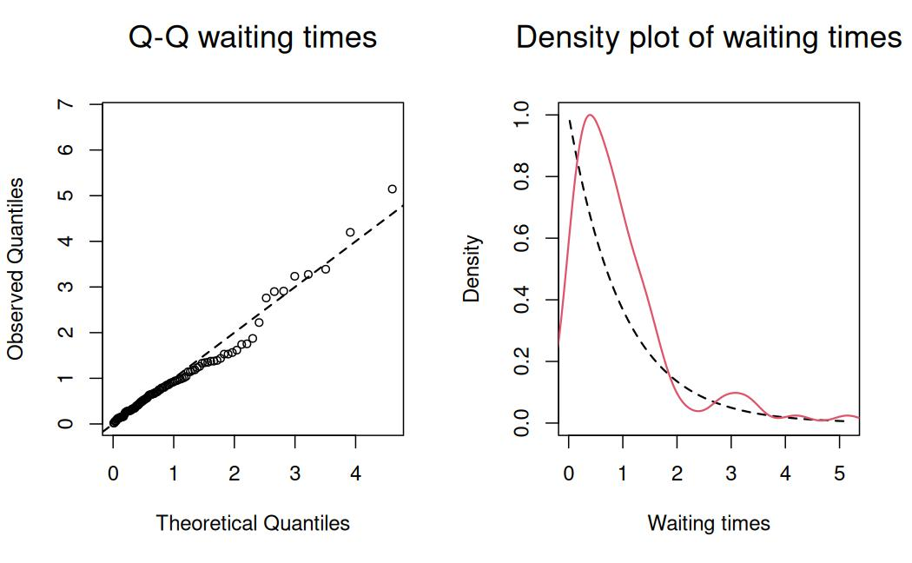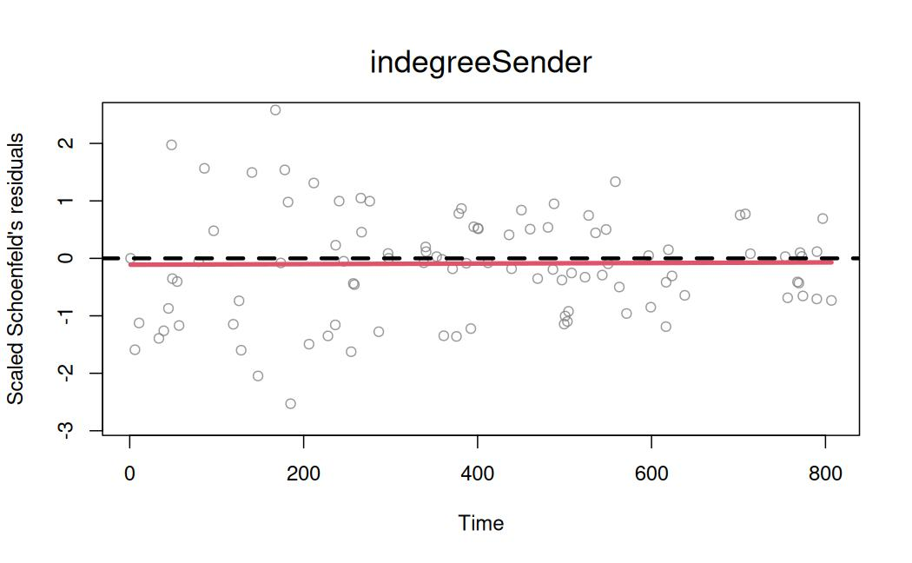 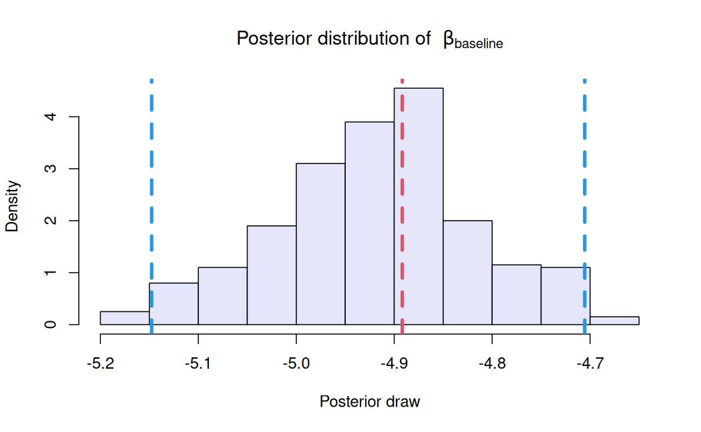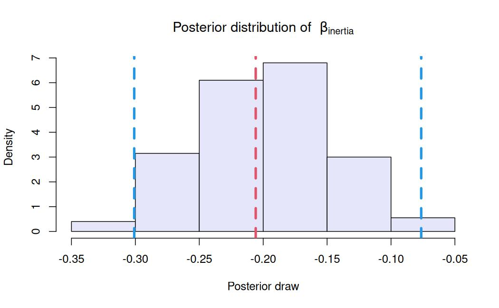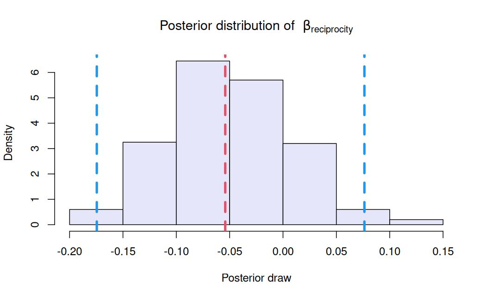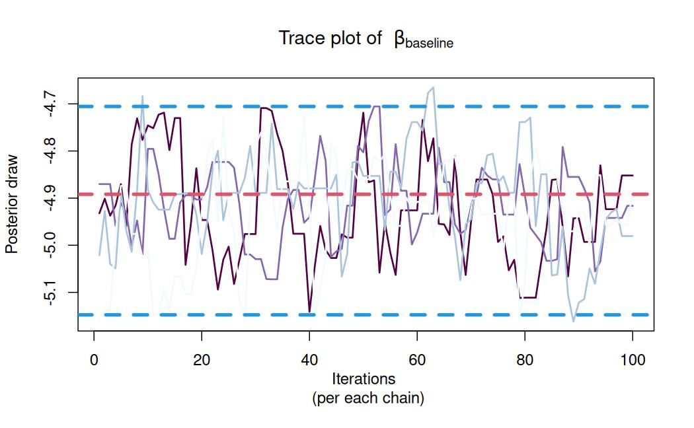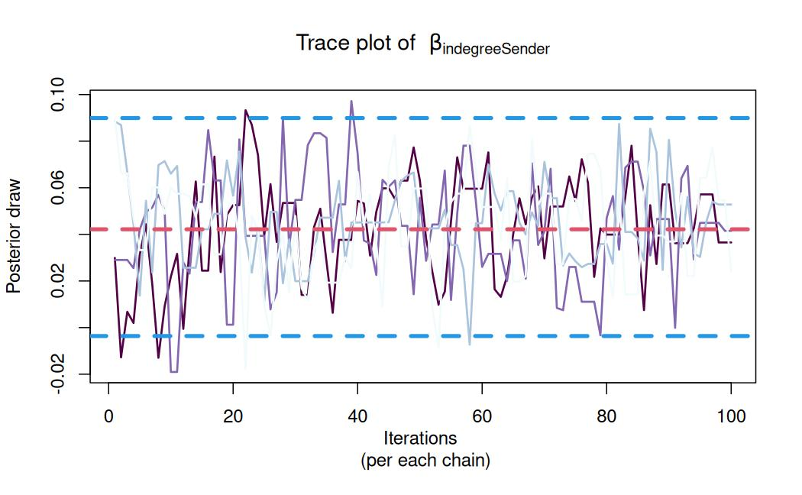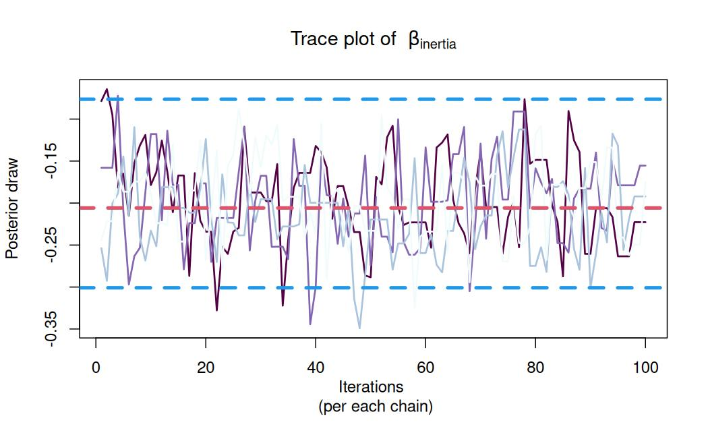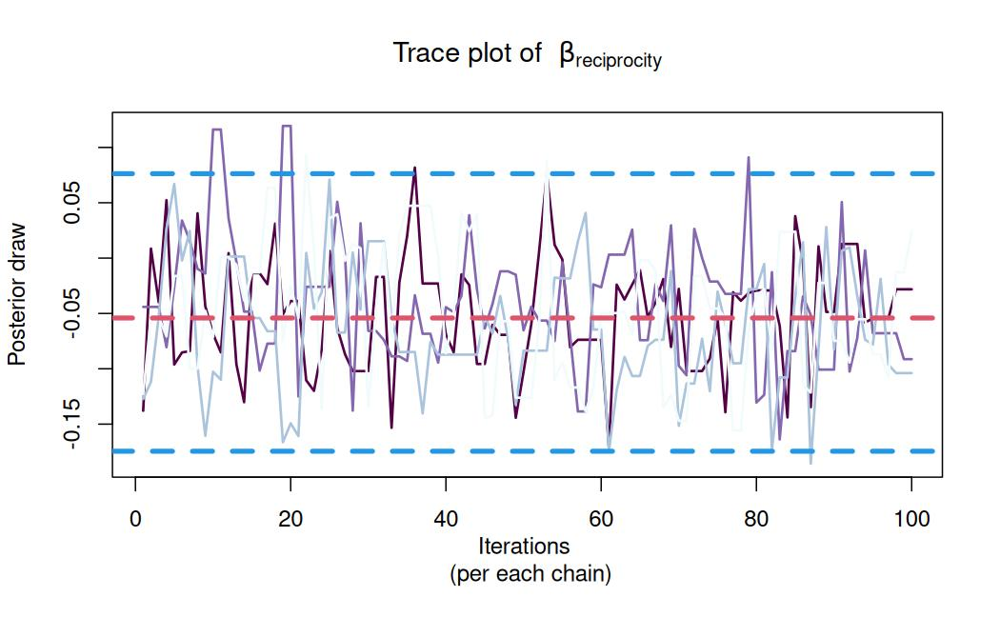
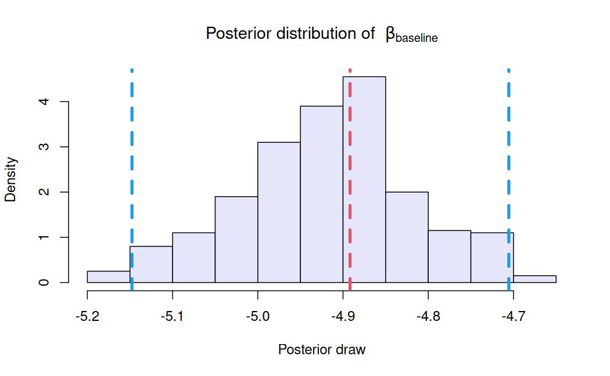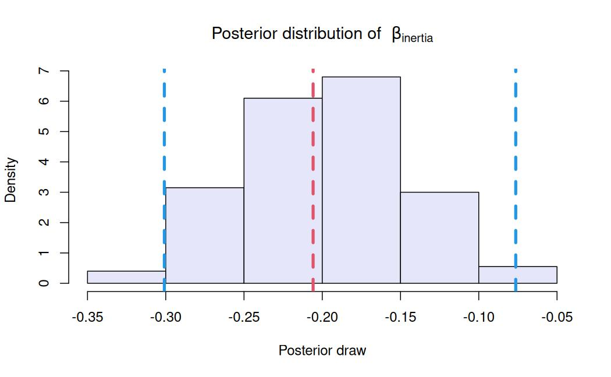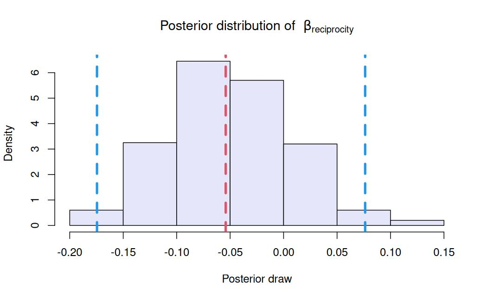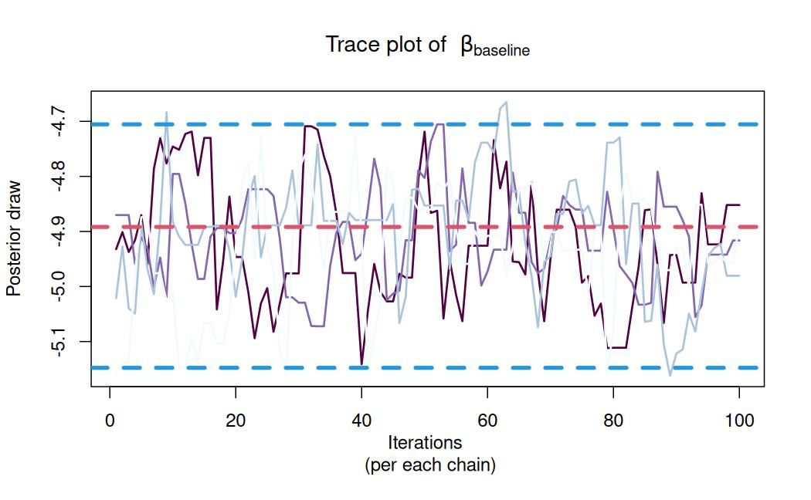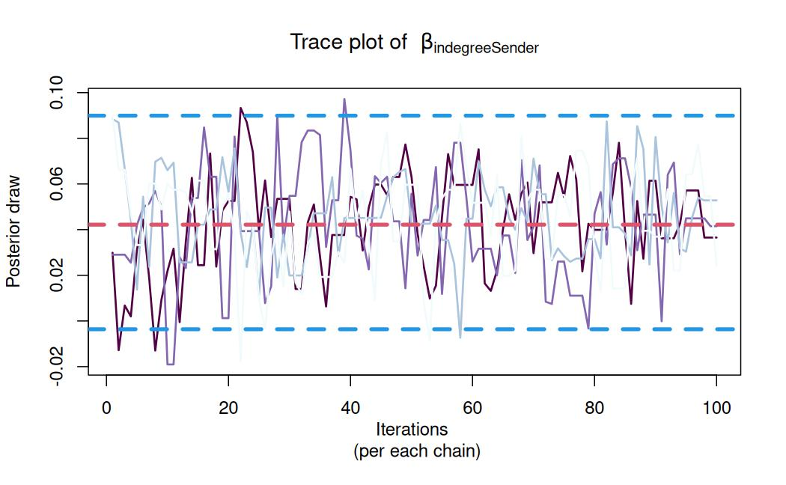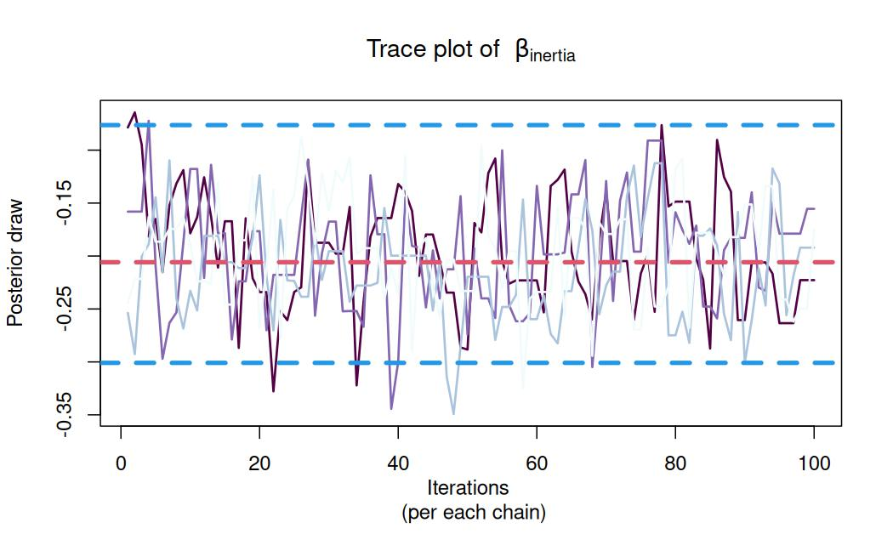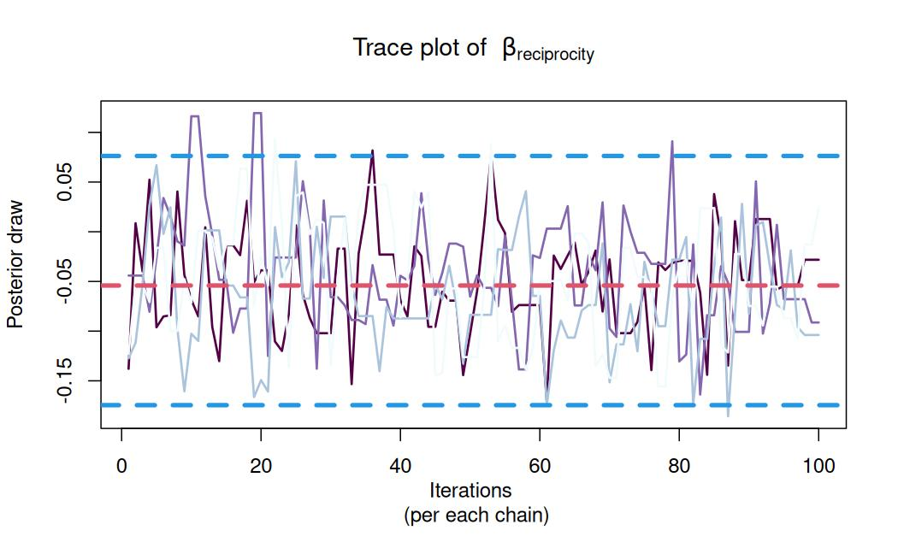
Actor-Oriented Modeling framework
For the actor-oriented modeling, we refer the modeling framework introduced by Stadtfeld and Block (2017), in which the process of realization of a relational event is described by two steps:
- first the actor that is going to initiate the next interaction and becomes the “sender” of the future event;
- then the choice of the “receiver” of the future event operated by the active “sender” in step 1.
The first step is modelled via a rate model (similar to a REM), in which the waiting times are modelled along with the sequence of the senders of the observed relational events. The second step is modelled via a multinomial discrete choice model, where we model the choice of the receiver of the next event conditional to the active sender at the first step.
Therefore, the two models can be described by two separate likelihood
functions with their own set of parameters. The parameters in each model
will describe the effect that explanatory variables (network dynamics
and other available exogenous statistics) have on the two distinct
processes. The estimation of the model parameters for each model can be
carried out separately and for this reason, the user can also provide a
remstats object containing the statistics of either both or
one of the two models.
The likelihood function
Consider a time-ordered sequence of \(M\) relational events, \(E_{t_M}=(e_1,\ldots,e_M)\), where each
event \(e_{m}\) in the sequence is
described by the 3-tuple \((s_{m},r_{m},t_{m})\) (we exclude here the
information about the event type), respectively sender, receiver, and
time of the event. Furthermore, consider \(N\) to be the number of actors in the
network. For simplicity, we assume that all actors in the network can be
the sender or the receiver of a relational event (i.e. full
risk set, see vignette(topic="riskset",package="remify")
for more information on alternative definitions of the risk set) and we
use the index \(n\) to indicate any
actor in the set \(\mathcal{R}\) of
actors at risk, thus \(n \in \left\lbrace
1,2,\ldots,N\right\rbrace\).
Sender activity rate model
The likelihood function that models the sender activity is:
\[ \mathscr{L}_{\text{sender model}}(\boldsymbol{\theta}; E_{t_M},X)= \prod_{m=1}^{M}{\Bigg[\tau(s_{m},t_{m},\boldsymbol{\theta})\prod_{n \in \mathcal{R}}^{}{\exp{\left\lbrace-\tau(n,t_{m},\boldsymbol{\theta})\left(t_m-t_{m-1}\right)\right\rbrace} }}\Bigg] \]
where:
-
\(\tau(n,t_{m},\boldsymbol{\theta})\) is the
activity rate of sender \(n\) at time
\(t_{m}\). The sender activity rate
describes the istantaneous probability that a sender initiates an
interaction at a specific time point and it is modeled as \(\tau(n,t_{m},\boldsymbol{\theta}) =
\exp{\left\lbrace
\boldsymbol{\theta}^{T}X_{[m,n,.]}\right\rbrace}\) where:
- \(\boldsymbol{\theta}\) is the vector of parameters of interest. Such parameters describe the effect that the sufficient statistics (explanatory variables) have on the activity rate of the sender;
-
\(\boldsymbol{\theta}^{T}X_{[m,n,.]} =
\sum_{p=1}^{P}{\theta_p X_{[m,n,p]}}\) is the linear predictor of
the sender \(n\) at time \(t_{m}\). The object \(X\) is a three dimensional array with
number of rows equal to the number of unique time points (or events) in
the sequence (see
vignette(package="remstats")for more information about statistics calculated per unique time point or per observed event), number of columns equal to number of actors in the sequence (\(N\)), number of slices equal to the number of variables in the linear predictor (\(P\)).
- \(s_m\) refers to the sender of the event observed at time \(t_m\) and \(n\) refers to any actor that can be sender of an interaction at time \(t_m\);
- \(\mathcal{R}\) describes the set of actors at risk of initiating an interaction, becoming then the future sender of a relational event (the set also includes the actor that is sender of the event at time \(t_m\)). In this tutorial, the risk set of the sender model is assumed to be the full risk set, where all the actors in the network can be “the sender” of a relational event at any time point in the event sequence;
- \((t_{m}-t_{m-1})\) is the waiting time between two subsequent relational events.
If the time of occurrence of the events is not available and we know only their order of occurrence, then the likelihood function for the sender model reduces to the Cox proportional-hazard survival model (Cox 1972),
\[ \mathscr{L}_{\text{sender model}}(\boldsymbol{\theta}; E_{t_M},X)= \prod_{m=1}^{M}{\Bigg[\frac{\tau(s_{m},t_{m},\boldsymbol{\theta})}{\sum_{n\in \mathcal{R}}^{}{\tau(n,t_{m},\boldsymbol{\theta})}}}\Bigg] \]
Receiver choice model
The likelihood function that models the receiver choice is:
\[ \mathscr{L}_{\text{receiver model}}(\boldsymbol{\beta}; E_{t_M},X)=\prod_{m=1}^{M}{\Bigg[\frac{\exp{\left\lbrace\boldsymbol{\beta}^{T}U_{[m,r_m,.]}\right\rbrace}}{\sum_{n \in \mathcal{R} \setminus \left\lbrace s_m \right\rbrace }^{}{\exp{\left\lbrace\boldsymbol{\beta}^{T}U_{[m,n,.]}\right\rbrace}}}\Bigg]} \]
where:
-
\(\exp{\left\lbrace\boldsymbol{\beta}^{T}U_{[m,r_m,.]}\right\rbrace}
\backslash \sum_{n \in \mathcal{R} \setminus \left\lbrace s_m
\right\rbrace
}^{}{\exp{\left\lbrace\boldsymbol{\beta}^{T}U_{[m,n,.]}\right\rbrace}}\)
is the conditional probability that the sender \(s_m\) active at time \(t_m\) chooses \(r_m\) as the receiver of the next
interaction, and:
- \(\boldsymbol{\beta}\) is the vector of \(K\) parameters of interest. Such parameters describe the effect that the sufficient statistics (explanatory variables) have on the choice of a receiver;
-
\(\boldsymbol{\beta}^{T}U_{[m,n,.]} =
\sum_{k=1}^{K}{\beta_k U_{[m,n,k]}}\) is the linear predictor of
the event at time \(t_{m}\) in which
the sender is \(s_m\) and the receiver
is any of the possible receivers, \(n\)
with \(n \neq s_m\). The object \(U\) is a three dimensional array with
number of rows equal to the number of events in the sequence (see
vignette(package="remstats")for more information about statistics calculated per unique time point or per observed event), number of columns equal to number of actors (\(N\)), number of slices equal to the number of variables in the linear predictor (\(K\)).
- \(r_m\) refers to the receiver observed at time \(t_m\) and \(n\) refers to any actor that can be the receiver of the event at time \(t_m\) (excluding the sender at time \(t_m\))
- \(\mathcal{R}\) describes the set of actors at risk of becoming the receiver of the next interaction. In the case of the receiver model, the risk set composition changes over time because at each time point the actor that is currently the sender cannot be also the receiver of the interaction and is excluded from the set of potential receivers. In this tutorial, the risk set of the reiceiver model is assumed to be the full risk set where all actors (excluding the current sender at each time point) can be “the receiver” at any time point.
A toy example on the actor oriented modeling framework
Consider the data ao_data, that is a list containing a
simulated relational event sequence where events were generated by
following the two-steps process described in the section above. We are
going to model the sender activity rate and the receiver choice as:
\[ \tau(n,t_{m},\boldsymbol{\theta}) = \exp{\left\lbrace \theta_{\text{intercept}} + \theta_{indegreeSender}\text{indegreeSender}(n,t_{m})\right\rbrace} \]
\[ \exp{\left\lbrace \boldsymbol{\beta}^{T}U_{[m,n,.]} \right\rbrace} = \exp{\left\lbrace \beta_{\text{inertia}}\text{inertia}(s_m,n,t_{m}) + \beta_{\text{reciprocity}}\text{reciprocity}(s_m,n,t_{m})\right\rbrace}\]
Furthermore, we know that true parameters quantifying the effect of the statistics (name in subscript next to the model parameters \(\theta\) and \(\beta\)) used in the generation of the event sequence are:
- for the sender model, \[\begin{bmatrix} \theta_{intercept} \\ \theta_{\text{indegreeSender}} \end{bmatrix} = \begin{bmatrix} -5.0 \\ 0.01 \end{bmatrix}\]
- for the receiver model \[\begin{bmatrix} \beta_{\text{inertia}} \\ \beta_{\text{reciprocity}} \end{bmatrix} = \begin{bmatrix} -0.1 \\ 0.03\end{bmatrix}\]
The parameters are also available as object within the list,
ao_data$true.pars.
# setting `ncores` to 1 (the user can change this parameter)
ncores <- 1L
# loading data
data(ao_data)
# true parameters' values
ao_data$true.pars## $rate_model
## intercept indegreeSender
## -5.00 0.01
##
## $choice_model
## inertia reciprocity
## -0.10 0.03
# processing event sequence with 'remify'
ao_reh <- remify::remify(edgelist = ao_data$edgelist, model = "actor")
# summary of the relational event network
summary(ao_reh)## Relational Event Network
## (processed for actor-oriented modeling):
## > events = 100
## > actors = 5
## > riskset = full
## > directed = TRUE
## > ordinal = FALSE
## > weighted = FALSE
## > time length ~ 2654
## > interevent time
## >> minimum ~ 0.8542
## >> maximum ~ 167.3494Estimating a model with remstimate() in 3 steps
The estimation of a model can be summarized in three steps:
- First, we define the linear predictor with the variables of
interest, using the statistics available within
remstats(statistics calculated by the user can be also supplied toremstats::remstats()).
# specifying linear predictor (for rate and choice model, with `remstats`)
rate_model <- ~ 1 + remstats::indegreeSender()
choice_model <- ~ remstats::inertia() + remstats::reciprocity()- Second, we calculate the statistics defined in the linear predictor
with the function
remstats::remstats()from theremstatspackage.
# calculating statistics (with `remstats`)
ao_stats <- remstats::remstats(reh = ao_reh, sender_effects = rate_model, receiver_effects = choice_model)
# the 'aomstats' 'remstats' object
ao_stats## Relational Event Network Statistics
## > Model: actor-oriented
## > Computation method: per time point
## > Sender model:
## >> Dimensions: 100 time points x 5 actors x 2 statistics
## >> Statistics:
## >>> 1: baseline
## >>> 2: indegreeSender
## > Receiver model:
## >> Dimensions: 100 events x 5 actors x 2 statistics
## >> Statistics:
## >>> 1: inertia
## >>> 2: reciprocity- Finally, we are ready to run any of the optimization methods with
the function
remstimate::remstimate().
# for example the method "MLE"
remstimate::remstimate(reh = ao_reh,
stats = ao_stats,
method = "MLE",
ncores = ncores) ## Relational Event Model (actor oriented)
##
## Coefficients rate model **for sender**:
##
## baseline indegreeSender
## -4.806201529 -0.008363321
##
## Null deviance: 1177.625
## Residual deviance: 1177.348
## AIC: 1181.348 AICC: 1181.472 BIC: 1186.558
##
## --------------------------------------------------------------------------------
##
## Coefficients choice model **for receiver**:
##
## inertia reciprocity
## -0.03250837 0.01828748
##
## Null deviance: 2.772589
## Residual deviance: 277.0551
## AIC: 281.0551 AICC: 281.1789 BIC: 286.2655In the sections below, as already done with the tie-oriented
framework, we show the estimation of the parameters using all the
methods available and we also show the usage and output of the methods
available for a remstimate object.
Frequentist approaches
Maximum Likelihood Estimation (MLE)
ao_mle <- remstimate::remstimate(reh = ao_reh,
stats = ao_stats,
ncores = ncores,
method = "MLE",
WAIC = TRUE, # setting WAIC computation to TRUE
nsimWAIC = 100) # number of draws for the computation of the WAIC set to 100 print( )
# printing the 'remstimate' object
ao_mle## Relational Event Model (actor oriented)
##
## Coefficients rate model **for sender**:
##
## baseline indegreeSender
## -4.806201529 -0.008363321
##
## Null deviance: 1177.625
## Residual deviance: 1177.348
## AIC: 1181.348 AICC: 1181.472 BIC: 1186.558 WAIC: 1181.781
##
## --------------------------------------------------------------------------------
##
## Coefficients choice model **for receiver**:
##
## inertia reciprocity
## -0.03250837 0.01828748
##
## Null deviance: 2.772589
## Residual deviance: 277.0551
## AIC: 281.0551 AICC: 281.1789 BIC: 286.2655 WAIC: 280.5819summary( )
# summary of the 'remstimate' object
summary(ao_mle)## Relational Event Model (actor oriented)
##
## Call rate model **for sender**:
##
## ~1 + remstats::indegreeSender()
##
##
## Coefficients rate model (MLE with interval likelihood):
##
## Estimate Std. Err z value Pr(>|z|) Pr(=0)
## baseline -4.8062015 0.1832563 -26.2266709 0.0 <2e-16
## indegreeSender -0.0083633 0.0159467 -0.5244534 0.6 0.8971
## Null deviance: 1177.625 on 100 degrees of freedom
## Residual deviance: 1177.348 on 98 degrees of freedom
## Chi-square: 0.2770484 on 2 degrees of freedom, asymptotic p-value 0.8706422
## AIC: 1181.348 AICC: 1181.472 BIC: 1186.558 WAIC: 1181.781
## --------------------------------------------------------------------------------
##
## Call choice model **for receiver**:
##
## ~remstats::inertia() + remstats::reciprocity()
##
##
## Coefficients choice model (MLE with interval likelihood):
##
## Estimate Std. Err z value Pr(>|z|) Pr(=0)
## inertia -0.032508 0.077037 -0.421983 0.6730 0.9015
## reciprocity 0.018287 0.071630 0.255305 0.7985 0.9064
## Null deviance: 2.772589 on 100 degrees of freedom
## Residual deviance: 277.0551 on 98 degrees of freedom
## Chi-square: -274.2826 on 2 degrees of freedom, asymptotic p-value 1
## AIC: 281.0551 AICC: 281.1789 BIC: 286.2655 WAIC: 280.5819Information Critieria
# aic
aic(ao_mle)## sender model receiver model
## 1181.3481 281.0551
# aicc
aicc(ao_mle)## sender model receiver model
## 1181.4718 281.1789
# bic
bic(ao_mle)## sender model receiver model
## 1186.5584 286.2655
#waic
waic(ao_mle)## sender model receiver model
## 1181.7813 280.5819diagnostics( )
# diagnostics
ao_mle_diagnostics <- diagnostics(object = ao_mle, reh = ao_reh, stats = ao_stats)Adaptive Gradient Descent Optimization (GDADAMAX)
ao_gd <- remstimate::remstimate(reh = ao_reh,
stats = ao_stats,
ncores = ncores,
method = "GDADAMAX",
epochs = 200L, # number of iterations of the Gradient-Descent algorithm
WAIC = TRUE, # setting WAIC computation to TRUE
nsimWAIC = 100) # number of draws for the computation of the WAIC set to 100
# print
ao_gd## Relational Event Model (actor oriented)
##
## Coefficients rate model **for sender**:
##
## baseline indegreeSender
## -0.1688384 -0.1017067
##
## Null deviance: 1177.625
## Residual deviance: 10066.19
## AIC: 10070.19 AICC: 10070.32 BIC: 10075.4 WAIC: 10287.92
##
## --------------------------------------------------------------------------------
##
## Coefficients choice model **for receiver**:
##
## inertia reciprocity
## -0.02370260 0.01567611
##
## Null deviance: 2.772589
## Residual deviance: 277.0683
## AIC: 281.0683 AICC: 281.192 BIC: 286.2787 WAIC: 280.3747
# diagnostics
ao_gd_diagnostics <- diagnostics(object = ao_gd, reh = ao_reh, stats = ao_stats)
# plot
# plot(x = ao_gd, reh = ao_reh, diagnostics = ao_gd_diagnostics) # uncomment to use the plot functionBayesian approaches
Bayesian Sampling Importance Resampling (BSIR)
library(mvnfast) # loading package for fast simulation from a multivariate Student t distribution
priormvt <- mvnfast::dmvt # defining which distribution we want to use from the 'mvnfast' package
ao_bsir <- remstimate::remstimate(reh = ao_reh,
stats = ao_stats,
ncores = ncores,
method = "BSIR",
nsim = 100L, # 100 draws from the posterior distribution
prior = list(sender_model = priormvt, receiver_model = priormvt), # defining prior here, prior parameters follow below
prior_args = list(sender_model = list(mu = rep(0,dim(ao_stats$sender_stats)[3]), # prior mu value for sender_model
sigma = diag(dim(ao_stats$sender_stats)[3])*1.5, # prior sigma value for sender_model
df = 1), # prior df value
receiver_model = list(mu = rep(0,dim(ao_stats$receiver_stats)[3]), # prior mu value for receiver_model
sigma = diag(dim(ao_stats$receiver_stats)[3])*1.5, # prior sigma value for receiver_model
df = 1)), # prior df value
log = TRUE, # requiring log density values from the prior,
seed = 20929, # set a seed only for reproducibility purposes
WAIC = TRUE, # setting WAIC computation to TRUE
nsimWAIC = 100 # number of draws for the computation of the WAIC set to 100
)
# summary
summary(ao_bsir)## Relational Event Model (actor oriented)
##
## Call rate model **for sender**:
##
## ~1 + remstats::indegreeSender()
##
##
## Posterior Modes rate model (BSIR with interval likelihood):
##
## Post.Mode Post.SD Q2.5% Q50% Q97.5% Pr(=0|x)
## baseline -4.8018252 0.1759390 -5.0995898 -4.7823997 -4.4837 <2e-16
## indegreeSender -0.0080396 0.0161221 -0.0390818 -0.0071234 0.0230 0.8983
## Log posterior: -588.6755 WAIC: 1181.684
## --------------------------------------------------------------------------------
##
## Call choice model **for receiver**:
##
## ~remstats::inertia() + remstats::reciprocity()
##
##
## Posterior Modes choice model (BSIR with interval likelihood):
##
## Post.Mode Post.SD Q2.5% Q50% Q97.5% Pr(=0|x)
## inertia -0.0126845 0.0811262 -0.1744974 -0.0077218 0.1423 0.9081
## reciprocity 0.0198576 0.0751748 -0.1140912 0.0010799 0.1581 0.9062
## Log posterior: -138.4584 WAIC: 282.0644
# diagnostics
ao_bsir_diagnostics <- diagnostics(object = ao_bsir, reh = ao_reh, stats = ao_stats)
# plot (only for the receiver_model, by setting sender_model = NA)
# plot(x = ao_bsir, reh = ao_reh, diagnostics = ao_bsir_diagnostics, sender_model = NA) # uncomment to use the plot functionHamiltonian Monte Carlo (HMC)
ao_hmc <- remstimate::remstimate(reh = ao_reh,
stats = ao_stats,
method = "HMC",
ncores = ncores,
nsim = 300L, # 300 draws to generate per each chain
nchains = 4L, # 4 chains (each one long 200 draws) to generate
burnin = 300L, # burnin length is 300
L = 100L, # number of leap-frog steps
epsilon = 0.1/100, # size of a leap-frog step
thin = 2L, # thinning size (this will reduce the final length of each chain will be 150)
seed = 23029, # set a seed only for reproducibility purposes
WAIC = TRUE, # setting WAIC computation to TRUE
nsimWAIC = 100 # number of draws for the computation of the WAIC set to 100
)
# summary
summary(ao_hmc)## Relational Event Model (actor oriented)
##
## Call rate model **for sender**:
##
## ~1 + remstats::indegreeSender()
##
##
## Posterior Modes rate model (HMC with interval likelihood):
##
## Post.Mode Post.SD Q2.5% Q50% Q97.5% Pr(=0|x)
## baseline -4.6587527 0.1024161 -4.8466379 -4.6503193 -4.4549 <2e-16
## indegreeSender -0.0192776 0.0090939 -0.0372322 -0.0195099 -0.0029 0.5139
## Log posterior: -599.8593 WAIC: 1179.536
## --------------------------------------------------------------------------------
##
## Call choice model **for receiver**:
##
## ~remstats::inertia() + remstats::reciprocity()
##
##
## Posterior Modes choice model (HMC with interval likelihood):
##
## Post.Mode Post.SD Q2.5% Q50% Q97.5% Pr(=0|x)
## inertia -0.0328733 0.0440346 -0.1198729 -0.0259082 0.0533 0.8833
## reciprocity 0.0189472 0.0410635 -0.0669650 0.0092633 0.0905 0.8999
## Log posterior: -138.5283 WAIC: 278.4279
# diagnostics
ao_hmc_diagnostics <- diagnostics(object = ao_hmc, reh = ao_reh, stats = ao_stats)
# plot (only for the receiver_model, by setting sender_model = NA)
plot(x = ao_hmc, reh = ao_reh, diagnostics = ao_hmc_diagnostics, sender_model = NA)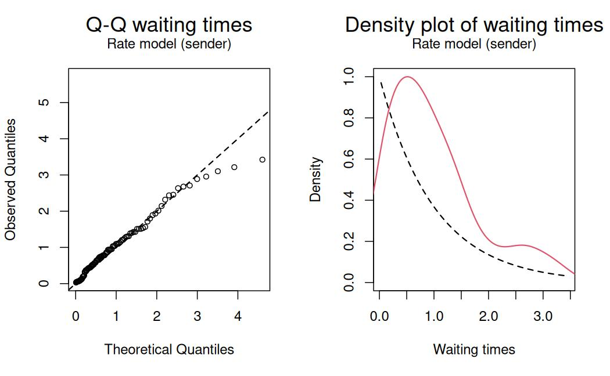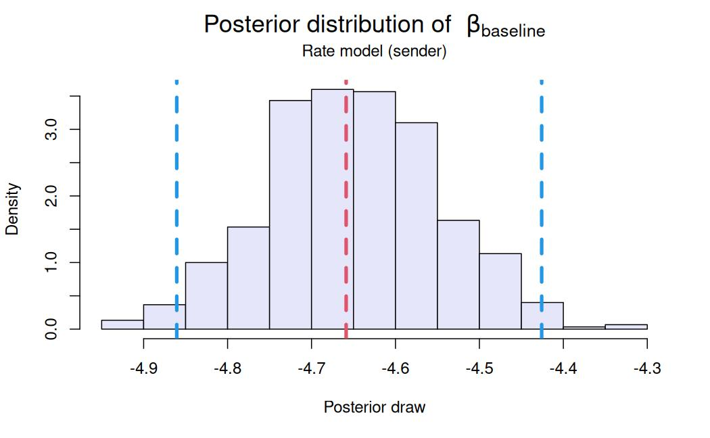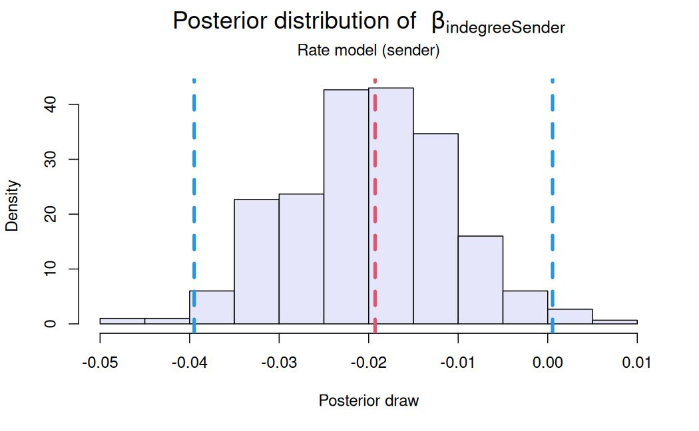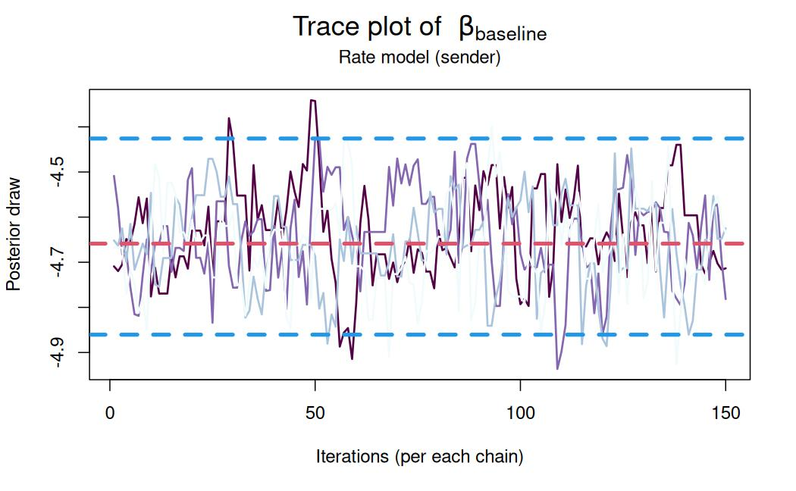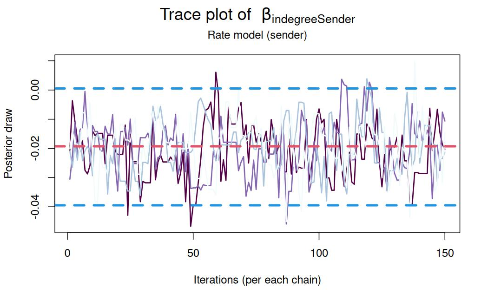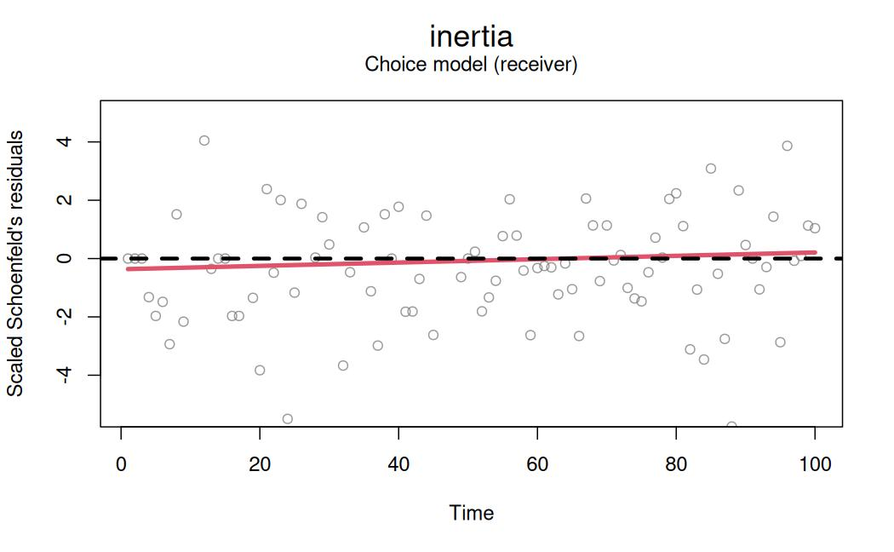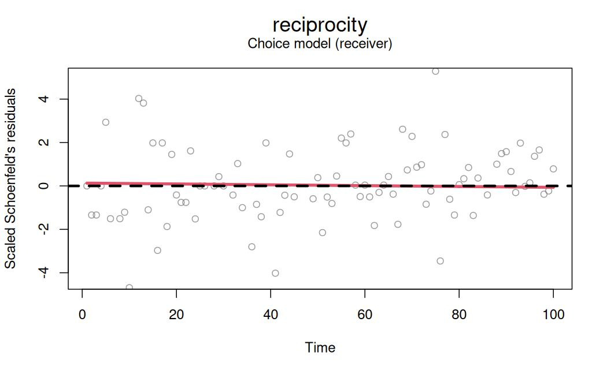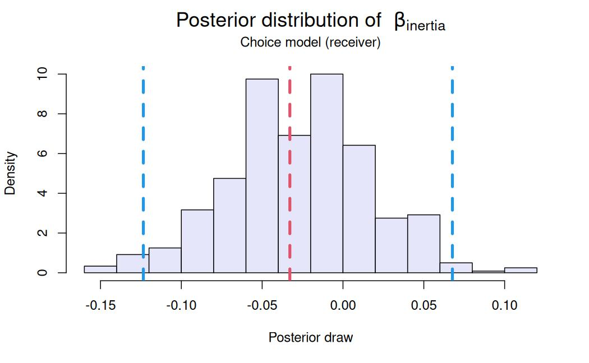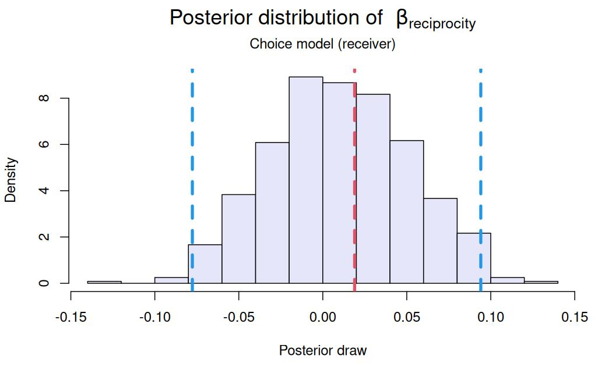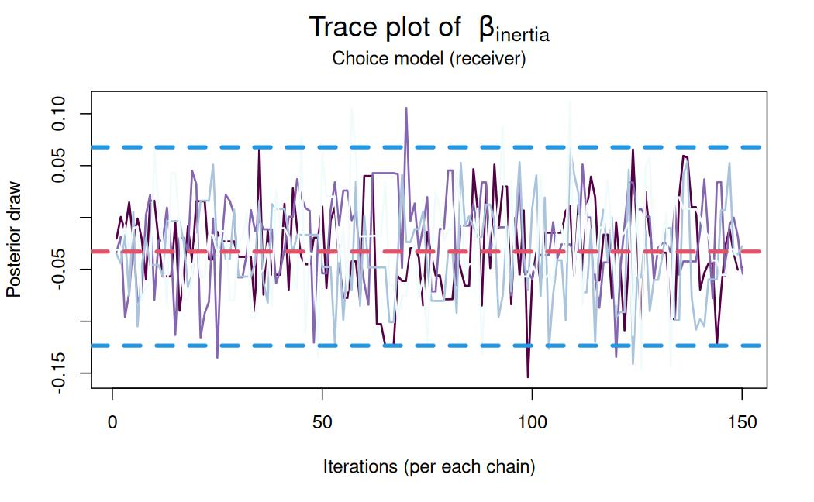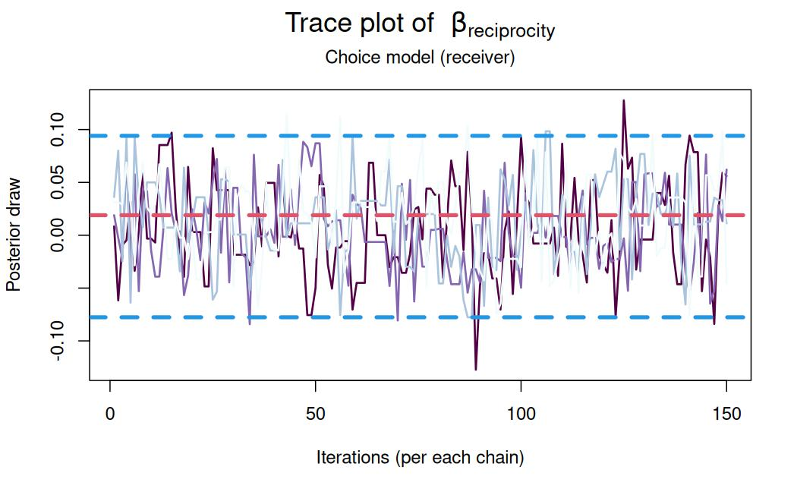